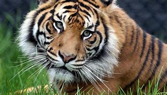

harimau sumatra
 Harimau adalah kucing terbesar di muka bumi.harimau sumatera merupakan salah satu subspesies harimau yang masih bertahan hidup hingga saat ini. sepesies ini juga dapat disebut harimau sunda, nama 'sunda' mengacu pada kawasan biogeografi yang mencangkup sumatera,jawa,dan bali.Harimau sumatra merupakan harimau yang memiliki ukuran terkecil.[4] Harimau sumatra mempunyai warna paling gelap di antara semua subspesies harimau lainnya, pola hitamnya berukuran lebar dan jaraknya rapat dan juga berhimpitan. Harimau sumatra jantan dewasa memiliki panjang rata-rata 92 inci dari kepala ke kaki atau sekitar 250 cm panjang dari kepala hingga kaki dengan berat 300 pound atau sekitar 140 kg, sedangkan tinggi dari jantan dapat mencapai 60 cm. Betinanya rata-rata memiliki panjang 78 inci atau sekitar 198 cm dan berat 200 pound atau sekitar 91 kg. Belang harimau sumatra lebih tipis daripada subspesies harimau lain. Warna kulit harimau sumatra merupakan yang paling gelap dari seluruh harimau, mulai dari kuning kemerah-merahan hingga jingga tua. Subspesies ini juga punya lebih banyak janggut serta surai dibandingkan subspesies lain, terutama harimau jantan. Ukurannya yang kecil memudahkannya menjelajahi rimba. Terdapat selaput di sela-sela jarinya yang menjadikan mereka mampu berenang cepat. Harimau ini diketahui menyudutkan mangsanya ke air, terutama bila binatang buruan tersebut lambat berenang. Bulunya berubah warna menjadi hijau gelap ketika melahirka